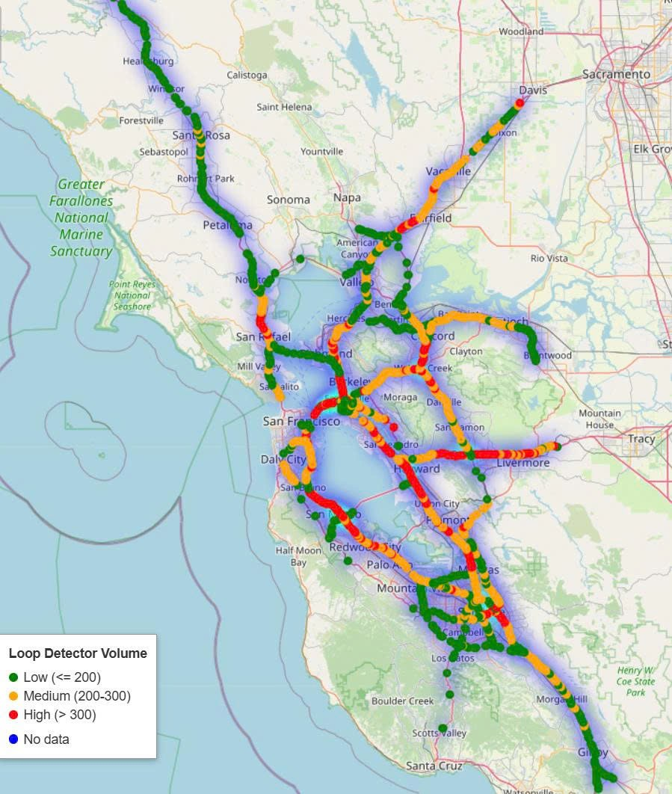
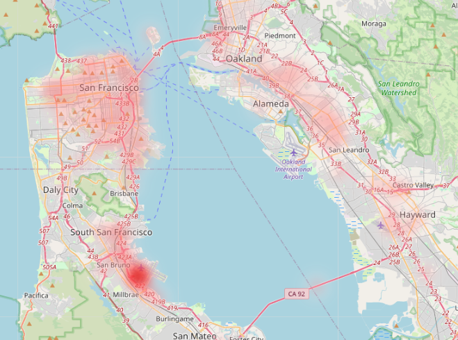
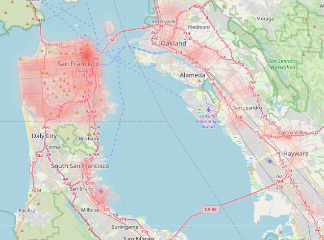

24H-GNN
A Pattern-Driven Pseudo-Label Fusion Graph Network for City-Wide Traffic Flow Prediction
Loop detectors + taxi GPS trajectories · San Francisco Bay AreaHo Chi Minh City, Vietnam · nhan.honhanhocse@hcmut.edu.vn · trongnhanle@hcmut.edu.vn

Abstract
Urban traffic flow prediction is essential for effective transportation management but remains challenging due to heterogeneous and spatially inconsistent data sources. We propose a pseudo-label fusion framework that integrates loop detector data and taxi GPS trajectories using spatio-temporal similarity. Graph neural networks (GNNs) are employed to model network dependencies, while an adaptive fusion strategy balances reliable sensor data and trajectory-based estimates. The proposed approach achieves strong hotspot detection performance (hotspot@50 = 0.92, hotspot@100 = 0.97) and consistently outperforms baseline models, particularly under limited supervision. The framework enables scalable city-wide traffic estimation through multi-source data integration.
At a glance
Loop detectors are accurate but sparse; taxi trajectories are abundant but noisy, biased, and unlabeled.
Give every trajectory-only segment a pseudo-label borrowed from its K = 5 most similar loop-equipped segments.
Blend pseudo-label and taxi profile: ỹ = 0.7 · ypseudo + 0.3 · ptaxi, then learn with GNNs.
Best hotspot@50 (0.92) and hotspot@100 (0.97) among all compared models on 838 segments.
Contributions
- Pseudo-label transfer from sparse sensors. Supervision flows from loop-equipped segments to trajectory-only segments via cosine similarity between normalized 24-hour patterns.
- Adaptive multi-source fusion. Reliable sensor-derived pseudo-labels are blended with trajectory-based profiles (α = 0.7), preserving both stability and local real-world deviations.
- City-wide GNN prediction and hotspot ranking. The fused representation lets GNNs reconstruct a full-city 24-hour profile, evaluated against ASTGCN, DCRNN, STGCN, GCN, GraphSAGE, and STGFormer.
Reference
Thanh Nhan Ho, Dong Anh Nguyen, Minh Tai Pham Nguyen, Minh Khue Phan Tran, Hoang Minh Nguyen, Nguyen Bao Tran, and Trong Nhan Le. 24H-GNN: A Pattern-Driven Pseudo-Label Fusion Graph Network for City-Wide Traffic Flow Prediction.
BibTeX citation
@misc{ho2026_24hgnn,
title = {24H-GNN: A Pattern-Driven Pseudo-Label Fusion Graph Network
for City-Wide Traffic Flow Prediction},
author = {Ho, Thanh Nhan and Nguyen, Dong Anh and Nguyen, Minh Tai Pham and
Tran, Minh Khue Phan and Nguyen, Hoang Minh and Tran, Nguyen Bao and
Le, Trong Nhan},
year = {2026}
}
Method
Loop detectors are accurate but sparsely deployed, whereas taxi trajectories are abundant but noisy and biased — and carry no labels, so they cannot directly provide traffic density. The framework turns this complementary pair into one reference-quality 24-hour dataset that covers the whole network, then trains graph models on top of it.
Data processing
Multimodal data are preprocessed, map-matched to the road network, and normalized into 24-hour patterns.
Pseudo-labels & features
Cosine-similarity pseudo-labels are generated and spatio-temporal features constructed.
Graph learning
A fusion or baseline graph module models dependencies across the road network.
Prediction & ranking
A prediction head estimates 24-hour flow and ranks hotspots.
3.1Fusion dataset with pseudo-labeling
Pseudo-labels are built at the road-segment level for taxi trajectories that have been map-matched onto the city's road network, then calibrated with loop-detector data at sensor locations. For each segment j without a detector, the K = 5 loop-equipped segments NK(j) whose normalized 24-hour pattern yiloop is most similar to the trajectory-derived profile pjtaxi are selected. K = 5 balances local similarity against data sparsity.
- Normalize all loop and taxi flows into 24-hour patterns; drop irregular days (holidays, special events).
- Compute the cosine similarity si between pjtaxi and every loop pattern yiloop, i ∈ L.
- Keep the top K = 5 loop-equipped segments as NK(j).
- Turn similarities into weights wi that sum to one.
- Return the weighted average of their loop patterns as yjpseudo.
The weighted average becomes a pseudo-label: a reliable estimate of the traffic flow that the segment would exhibit if it were equipped with a sensor. In this way, biased or incomplete data are transformed into reference-quality data suitable for machine learning, leveraging the inherent stability of traffic patterns. Excluding irregular days keeps the pseudo-labels focused on stable, long-term behaviour.
Because the patterns are normalized, cosine similarity compares the shape of the daily curve (when peaks occur) rather than absolute volume — a quiet street can borrow its label from a busy road that has the same daily rhythm. This is our interpretation of Eq. (1), not a claim made in the paper.
3.2Merging the trajectory dataset
After pseudo-labels are assigned to all 838 road segments, each segment is represented by two components: a relative traffic flow vector pjtaxi and a pseudo-label yjpseudo derived from reliable sensor-based data. They are combined by an adjusted fusion operation:
Interactive demo: from loop neighbours to a fused profile
A toy illustration of Eqs. (1)–(4). The sensor-less segment has only a noisy, biased taxi profile (gold, dotted). Three loop neighbours (grey) are weighted by cosine similarity into a pseudo-label (dashed). Drag α to move the fused profile (blue) between the two sources.
Toy example for intuition only — synthetic profiles with K = 3 for readability (the paper uses K = 5); not data or an experiment from the paper.
Experiment
4.1Data sources
Two sources that cover nearly the entire city but are not homogeneous are synthesized into one 24-hour pattern dataset.
| Source | Dataset | Coverage | Role in 24H-GNN |
|---|---|---|---|
| Loop detectors | LargeST (Greater Bay Area subset) | 2,352 sensors · 2020 and 2021 | Accurate but sparse — reference patterns for pseudo-labels |
| Taxi GPS trajectories | SFMTA Taxi Trips | All permitted taxi companies in the City and County of San Francisco | Abundant but noisy and biased — trajectory profile ptaxi |
| Fused dataset | Pseudo-labeled + taxi | 838 road segments | 24-hour pattern ỹ per segment (α = 0.7) |
Table 1. Data sources and the fused dataset.


4.2Training setup & baselines
| Parameter | Value |
|---|---|
| Optimizer | Adam |
| Learning rate | 1.0 × 10−4 |
| Number of neighbors (K) | 5 |
| Fusion coefficient (α) | 0.7 |
| Epochs | 50 |
| Batch size | 10 |
Table 2. Training and hyperparameter settings.
Baselines (the main comparison set): ASTGCN, DCRNN, STGCN, GCN, GraphSAGE, and STGFormer — models that learn spatio-temporal interactions across road networks. Proposed: Fusion-GraphSAGE and Fusion-MultiScaleGNN. Metrics: R² for flow estimation and hotspot@50 / hotspot@100 for hotspot detection at two ranking thresholds.
Results
The proposed fusion frameworks consistently outperform the baselines on hotspot detection, confirming the effectiveness of adaptive multi-source fusion. Fusion-MultiScaleGNN is best at the smaller ranking threshold (hotspot@50 = 0.92), while Fusion-GraphSAGE is best at the larger one (hotspot@100 = 0.97) — complementary strengths in local and global congestion identification.
hotspot@50 over the best baseline (GraphSAGE 0.84 → Fusion-MultiScaleGNN 0.92); Fusion-GraphSAGE also gains +0.04.
hotspot@100 over the best baseline (GraphSAGE 0.93 → Fusion-GraphSAGE 0.97); Fusion-MultiScaleGNN matches it at 0.93.
R² is highest for plain GraphSAGE; the fusion models stay close (0.81 and 0.79).
5.1Explore the benchmark
Models are sorted by the selected metric; ★ marks the best value. Numbers are those of Table 3.
| Method | R² | hotspot@50 | hotspot@100 |
|---|---|---|---|
| ASTGCN | 0.71 | 0.60 | 0.75 |
| DCRNN | 0.74 | 0.64 | 0.74 |
| STGCN | 0.76 | 0.68 | 0.74 |
| GCN | 0.75 | 0.62 | 0.70 |
| GraphSAGE | 0.82 | 0.84 | 0.93 |
| STGFormer | 0.51 | 0.00 | 0.22 |
| Fusion-GraphSAGE (Ours) | 0.81 | 0.88 | 0.97 |
| Fusion-MultiScaleGNN (Ours) | 0.79 | 0.92 | 0.93 |
| Best Ours − best baseline | −0.01 | +0.08 | +0.04 |
Table 3. Model performance metrics across different models (best per column in bold). The last row is computed from the table: best of our two models minus the best baseline in each column.
5.2Reading the numbers
- Ranking, not just fitting. Fusion mainly improves how well the most congested segments are identified (hotspot@k), while R² stays within 0.01–0.03 of GraphSAGE.
- Two models, two scales. MultiScaleGNN leads when ranking only 50 segments; GraphSAGE-based fusion leads at 100.
- Weaker spatio-temporal baselines. STGFormer reaches R² 0.51 with hotspot@50 of 0.00, while ASTGCN, DCRNN, STGCN, and GCN lie between 0.71 and 0.76 R².
5.3Hotspot visualization
Figure 3 compares ground-truth and predicted top-100 hotspots in the San Francisco Bay Area during the peak period (16–17 h). Predicted locations are quite close to the actual congestion patterns and identify several key bottlenecks in downtown San Francisco and along key arterial routes — an essential capability for practical urban traffic management. Drag the handle to compare.


Ground truthPredictionConclusion
This study proposes a pseudo-label fusion framework for city-wide traffic prediction. By integrating loop detector and trajectory data, the model effectively learns 24-hour traffic patterns and improves hotspot detection. The spatio-temporal pseudo-labeling mechanism extends supervision to unlabeled regions, enabling scalable traffic estimation under limited ground-truth data.
Acknowledgements. This work is acknowledged by Ho Chi Minh City University of Technology – Vietnam National University and Ho Chi Minh City Open University, Vietnam.